At H2O.ai, we believe that every company can and should be an AI company. This is a fundamental concept for the future of every business and organization today. As you embark on this AI journey to make your own AI, we want you to explore the key considerations as well as the technology that will make your own AI a possibility.
To make your own AI with an automatic machine learning platform, the platform needs to be open and extensible. This allows data scientists to influence the automatic machine learning optimization process and for the process to consider additional feature engineering, scorers metrics, and modeling algorithms. Data scientists can add their insights, customizations, and domain expertise to build the most accurate models for each use case. Driverless AI uses the concept of recipes to optimize the machine learning process, and with Driverless AI 1.7.0 and later versions, users can add and develop custom recipes.
In this tutorial, we will cover what a recipe is, the different types of recipes available, and how to upload existing recipes to Driverless AI through the URL option. The three types of custom recipes that will be covered are transformer, scorer, and model.
You will need the following to be able to do this tutorial:
- Basic knowledge of Machine Learning and Statistics
- A Driverless AI environment that is version 1.7.0 or newer
- Basic knowledge of Driverless AI or doing the Automatic Machine Learning Introduction with Driverless AI
- A Two-Hour Test Drive session : Test Drive is H2O.ai's Driverless AI on the AWS Cloud. No need to download software. Explore all the features and benefits of the H2O Automatic Learning Platform.
- Need a Two-Hour Test Drive session? Follow the instructions on this quick tutorial to get a Test Drive session started.
- Need a Two-Hour Test Drive session? Follow the instructions on this quick tutorial to get a Test Drive session started.
Note: Aquarium's Driverless AI Test Drive lab has a license key built-in, so you don't need to request one to use it. Each Driverless AI Test Drive instance will be available to you for two hours, after which it will terminate. No work will be saved. If you need more time to further explore Driverless AI, you can always launch another Test Drive instance or reach out to our sales team via the contact us form.
H2O Driverless AI is an artificial intelligence (AI) platform for automatic machine learning. Driverless AI automates some of the most difficult and tedious data science and machine learning tasks such as feature engineering, algorithm selection, model validation, model tuning, model selection, model explanation, model documentation, and model deployment. It aims to achieve the highest predictive accuracy, comparable to expert data scientists, but in a much shorter time thanks to end-to-end automation. The current scope of Driverless AI does not include extensive data manipulation or augmentation before starting an experiment; hence most of the data preparation needs to be done before loading the data.
Driverless AI uses an experiment to learn from your data and build an end-to-end scoring pipeline for productionalizing a model. The experiment process and the final pipeline are made up of building blocks, or recipes. These recipes are Python code snippets. Recipes have the following types: ML algorithms, feature engineering (transformers), scorers, and data. In Driverless AI 1.7.0, we added support for BYOR (Bring Your Own Recipe). With BYOR, you can use your own recipes in combination with or instead of all built-in recipes. This allows you to further influence the Driverless AI Automatic ML pipeline in addition to out-of-the-box control over the optimization choices that Driverless AI makes.
Recipes can be uploaded into Driverless AI at runtime without having to restart the platform, just like a plugin. There are approximately 150 open-source recipes that have been created by H2O and curated in the recipe library by data science experts that can be used as-is or as templates and expanded upon.
Existing recipes include templates for:
- Transformers
- Scorers
- Models
- Data
The various types of templates and how to use them will be described in the remaining tasks of the tutorial. Please note that the Data recipes will be covered in another tutorial.
How do recipes work in Driverless AI?
During the training of a supervised machine learning modeling pipeline, Driverless AI can use the custom recipes or code snippets as building blocks, independent or in combination with all built-in recipes that come with Driverless AI. The custom recipes act the same as if they were written by H2O.ai. It's the same python template and backend, so there is no performance penalty.
Below is a diagram of how recipes work in Driverless AI and how the Automatic Model Optimization process is extended:

The image below is a deeper dive into the BYOR architecture for a multi-class problem:

The diagram above focuses on the parts of Driverless AI that are relevant to the BYOR architecture. Automatic Visualization and Machine Learning Interpretability are not covered in this diagram. The diagram is the architecture representing a multi-class problem. Binary classification and regression problems are also supported.
What is the role of recipes in ML?
BYOR allows Data Scientists to bring their own recipes or leverage the existing, open-source recipes to manipulate, augment, and optimize their data. In this way, the expertise of those creating and using the recipes is leveraged to focus on domain-specific functions to build customizations.
Where can you find the H2O open-source recipes?
The curated open-source recipes currently reside in the following GitHub repository:
H2O Curated Recipes GitHub Repo
Deeper Dive and Resources
Explore the recipe Library and recipe recommendations
Best Practices for Recipes:
About the Dataset
This tutorial will use the customer churn telco dataset from Kaggle. The dataset has information about customers of a telecommunications company. Some of the features included are customer demographic location, length of the account, and customer call history. We will be predicting customer churn.
This dataset set has 3333 customers(rows) and 21 columns representing attributes of each customer's telephone plan.
Add the Data
1. Click on + Add a Dataset (or Drag and Drop)
2. Select FILE SYSTEM

3. Enter the following /data/Splunk/churn into the search bar.
4. Select churn.csv
5. Click to Import Selection
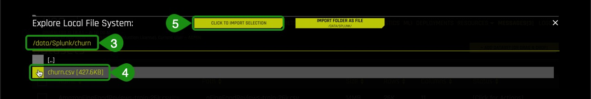
6. If the file loaded successfully, then you should see an image similar to the one below:

Note: you can ignore the other datasets as they are used in other tutorials.
7. Let's take a quick look at the columns of the churn dataset:
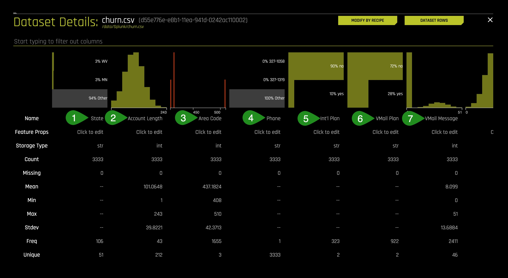
Things to Note:
- State
- Account Length - in days
- Area Code
- Phone - Phone Number
- Int'l Plan - International Plan
- VMail Plan - Voicemail Plan
- VMail Messages - Number of voicemail Messages
8. Continue scrolling the current page to see more columns (image is not included)
- Day Mins - Total Day Minutes
- Day Calls - Total Day Calls
- Day Charge - Total Day Charge
- Eve Mins - Total Evening Minutes
- Eve Calls - Total Evening Call
- Eve Charge - Total Evening Charge
- Night Mins - Total Night Minutes
- Night Calls - Total Night Calls
- Night Charge - Total Night Charge
- Intl Mins - Total International Minutes
- Intl Calls - Total International Calls
- Intl Charge - Total International Charge
- CustServ Call - Total Customer Service Calls
- Churn - Did customer churn? True.: customer churned, False.: customer did not churn
9. Return to the Datasets Page
Launch Experiment
1. On the Datasets page click on the churn.csv dataset and select Predict

2. Select Not Now on the First time Driverless AI box message. A similar image should appear:

3. Select Target Column, then select Churn?

4. Name your experiment Exp 1 - Baseline and verify that the experiment looks similar to the one below, then select Launch Experiment:
Note: You might have to update the default settings to the ones shown below.

5. Once the experiment is completed, a similar page will appear with experiment results:
Experiment 1 Results:

Experiment 1 - ROC Accuracy

Things to Note:
- Under summary: The validation score is 0.9080 with a best accuracy of 0.9286 (click on ROC then hover over Best ACC)
- Variable Importance: The top variable that led to a customer churning according to this model was "CustServ Calls." The other variable of most importance is "Day_charge". Intuitively this makes sense because if a customer is overpaying for calls in the morning when they might be the most active and also overpaying for "CustServ Calls", it could have led to a dissatisfied customer.
Deeper Dive and Resources
In Task 2, we ran an experiment to build a model that would predict customer churn. The Driverless AI model generated in task 2 gave us the results below:
Summary of results:
- | Experiment 1 (Base) |
Experiment Settings | 5-4-10 |
Scorer | AUC |
Model | LIGHTGBM |
Feature Importance | Customer Service Calls, and Day Charge(Total Day Charge) |
AUC Score | 0.9080 |
Accuracy | 0.9286 |
When a dataset is selected for an experiment, Driverless AI optimizes its settings by selecting the best Scorer, Model(s), and Transformers for the dataset. However, this does not mean we cannot import other scorers, models, or transformers to see if we can further optimize our model. In this task, we will be importing a transformer recipe, to see how the features in the feature engineering change.
Now we are going to import a recipe to add together related numeric features such as day minutes, evening minutes, and night minutes. Driverless AI doesn't add three or more columns automatically, so we will add a recipe that will do this for us. We will see if this new feature ends up in the top features used by our final Driverless AI model.
Import a Transformer Recipe
The goal of importing the new transformer recipe is to see if we can further optimize our baseline model. To do this, we are going to take our baseline experiment and import the sum.py transformer
1. Select Experiments located at the top of the Experiment page:

2. Hover over Exp 1 - Baseline, then click on the three stacked small boxes located on the right side of Exp 1 - Baseline and select New Model with Same Params, this will create a new experiment with the same parameters that you used for Exp 1 - Baseline:

3. Select Not Now on the First Time Using Driverless AI Tour
4. Select Expert Settings

5. Click on +Load Custom Recipe From URL
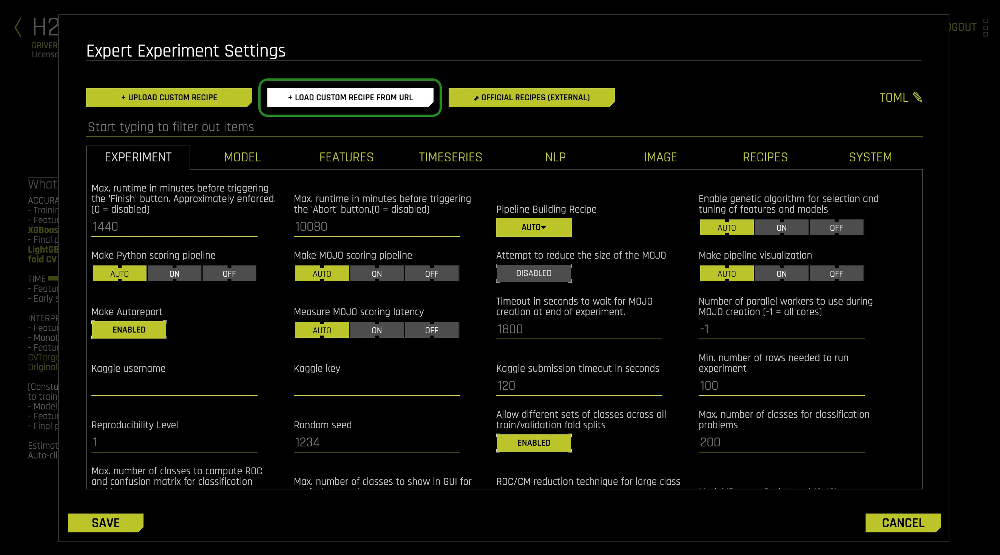
6. Copy and paste the following URL for the SumTransformer into the Load Custom Recipe box then click on Save.
https://github.com/h2oai/driverlessai-recipes/blob/rel-1.9.0/transformers/numeric/sum.py

7. There will be a message updating you on the status of loading the recipe; then the Expert Experiment Settings page will re-appear
8. On the Expert Experiment Settings find Recipes and click on it
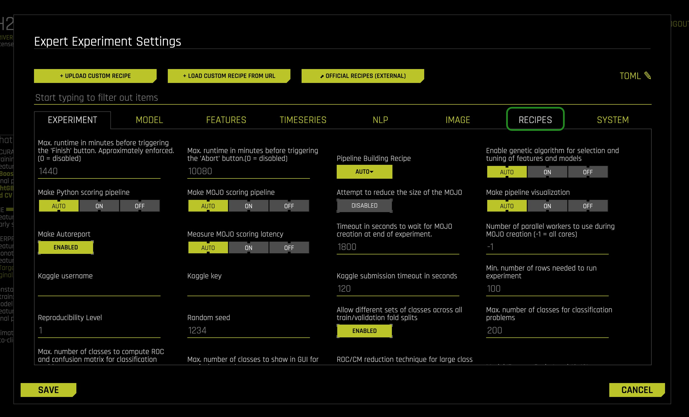
9. Click on Select Values under Include Specific Transformer, we are going to verify that the transformer we loaded did indeed load.

10. Type SumTransformer on the search bar, if the Transformer loaded correctly, then it will appear as shown below, highlighted, meaning that it will be used by Driverless AI. Make sure your SumTransformer is checked, and click Done

11. Select Save on the Expert Experiment Settings page
12. Name your experiment Exp 2 - Transformer. Also, verify that the transformer is in the experiment; on the Experiments page, look under "What do these settings mean?" > "Interpretability" and you should see the custom transformer as Sum.

13. Select Launch Experiment

Note: In Variable Importance: It might be the case that in your experiment certain features will start with "SUM;" those are the features from the custom transformer. If so, that will mean that they are playing an important role in the new model.
In this case, the AUC didn't improve, and that is because Driverless AI didn't use the recipe we uploaded. Though sometimes, Driverless AI makes use of the transformer, and that depends on the Data sampling it uses when running the experiment. If you want to see how the recipe will improve the AUC, you can go back to recipes and only select the transformer. We will further discuss the results at the end of task 6.
Deeper Dive and Resources
In this task, we will be importing a Scorer recipe to optimize the modeling process for a metric that may be more important to our business than a standard statistical scorer.
Import a Scorer Recipe
The model recipe that will be used for this experiment is the Brier Loss Scorer; to learn more about the Brier Loss model, see the Deeper Dive and Resources at the end of this task.
1. Select Experiments located at the top of the Experiment page
2. Hover over Exp 1 - Baseline, then click on the three stacked small boxes located on the right side of Exp 1 - Baseline and select New Model with Same Params, this will create a new experiment with the same parameters that you used for Exp 1 - Baseline:

3. Select Expert Settings
4. Click on +Load Custom Recipe From URL

5. Copy and paste the following URL for the Custom Brier Loss recipe into the Load Custom Recipe box then click on Save
https://github.com/h2oai/driverlessai-recipes/blob/rel-1.9.0/scorers/classification/binary/brier_loss.py
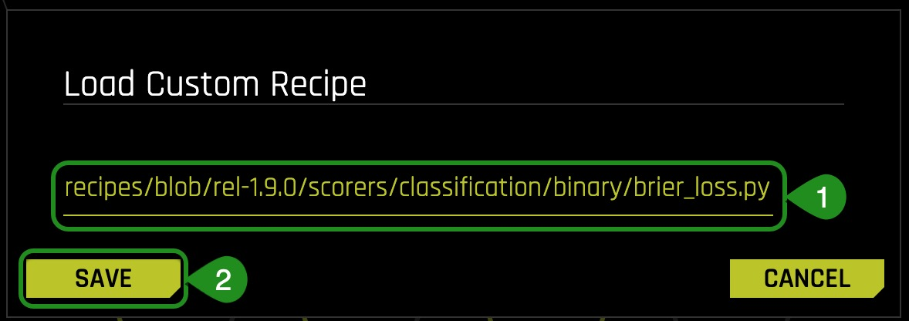
6. There will be a message updating you on the status of loading the recipe; then the Expert Experiment Settings page will re-appear
7. On the Expert Experiment Settings find Recipes, and click on it
8. Click on Select Value under Include Specific Scorers, we are going to verify that the scorer we loaded did indeed load

9. On the list of Scores that comes up look for BRIER, if the Scorer loaded correctly, then it will appear as shown below, highlighted meaning that it will be used by Driverless AI:

10. Select Save on the Expert Experiment Settings page
11. Once back on the Experiment page, click on the Scorer setting which has an AUC as seen on the image below:

12. Select the Brier Scorer by clicking on it:

13. Name your experiment Exp 3 - Scorer, and now your experiment page should look similar to the one below with Brier as your new scorer. Since we selected to create a new experiment from the baseline experiment, this experiment does not have the transformer we loaded on task 2.
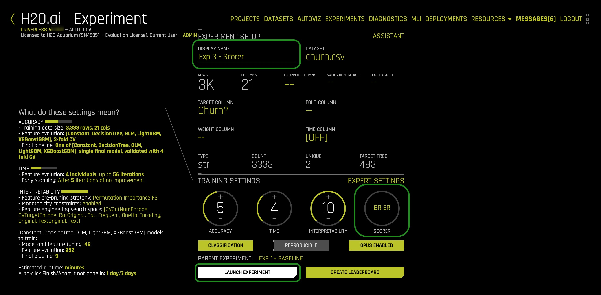
14. Select Launch Experiment

Experiment 3 - ROC, Best Accuracy
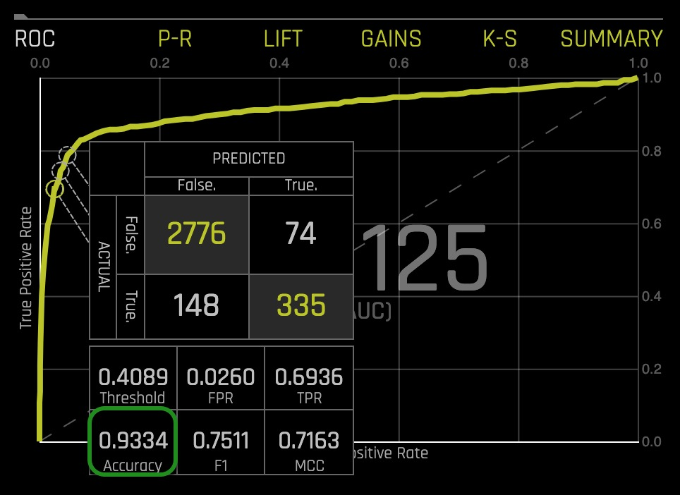
The ROC for this experiment was 0.9125, and the best accuracy was 0.9334.
Deeper Dive and Resources
In this task, we will be importing a model recipe to see if this new custom model recipe will help improve our churn model.
Import a Model Recipe
The model recipe that will be used for this experiment is ExtraTrees, which is an extremely randomized tree (ExtraTrees) from sklearn. To learn more about the Extra Trees model see the Deeper Dive and Resources at the end of this task.
1.Select Experiments located at the top of the Experiment page
2. Hover over Exp 1 - Baseline, then click on the three stacked small boxes located on the right side of Exp 1 - Baseline and select New Model with Same Params, this will create a new experiment with the same parameters that you used for Exp 1 - Baseline:

3. Select Expert Settings
4. Click on +Load Custom Recipe From URL
5. Copy and paste the following URL into the Load Custom Recipe box then click on Save
https://github.com/h2oai/driverlessai-recipes/blob/rel-1.9.0/models/algorithms/extra_trees.py

6. There will be a message updating you on the status of the recipe; then the Expert Experiment Settings page will re-appear
7. On the Expert Experiment Settings find Recipes and click on it
8. Click on Select Value under Include Specific Model, we are going to verify that the custom model we loaded did indeed load then we will only select the ExtraTress model to run on our new experiment:

9. Click on Uncheck all, then select the ExtraTreess model and click Done

10. Select Save on the Expert Experiment Settings page
11. Name your experiment Exp 4 - Model and verify that the custom model was included on the experiment on the Experiments page by looking under "What do these settings mean?", the settings have been updated to reflect the new ExtraTrees custom model:

12. Select Launch Experiment

Experiment 3 - ROC, Best Accuracy

The AUC for this experiment was 0.9101, and the best accuracy was 0.9466
Deeper Dive and Resources
So far, we ran four experiments, a baseline, and the baseline with three different types of recipes:
- Driverless AI default settings
- Transformer
- Scorer
- Model
Now we are going to compare the results of all the experiments through the Projects feature which allows us to compare the final models for each experiment:
1. Click on Projects

2. Select +New Project
3. Enter the following under:
Name
Customer Churn Recipe Comparison
Description
Comparison of customer churn experiments using various recipes.
4. Select Create a New Project

5. Click on +Link Experiment

6. Select Exp 1 - Baseline by clicking on the Model

7. Repeat step 6 for the remaining models (2, 3, and 4). The Project page should look similar to the one below:
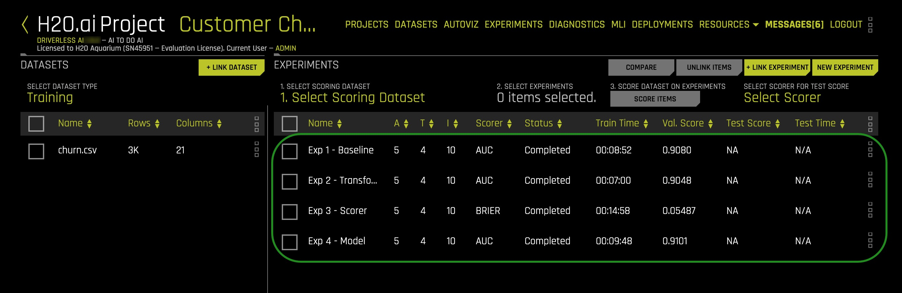
8. Select Exp 1, 2 and 3 to compare by clicking on the select box to the left of each model, and then on Compare 3 Items:

9. A similar page will appear with the three model results:

Confusion Matrices for each of the selected models

From the confusion matrices shown above, we can get an idea of how the models with the custom recipes improved. We can see that the Scorer recipe yielded a lower misclassification error compared to the baseline misclassification error of 7.56% .
- Formula: Misclassification (all incorrect / all) = (FP + FN) / (TP + TN + FP + FN)
- The misclassification percentage for the Scorer recipe is:
Misclassification = (133 + 103) / (2717 + 380 + 133 + 103)
Misclassification = 236 / 3,333 = 0.0708 = 7.08%
- The misclassification percentage for the Baseline is:
Misclassification = (146 + 106) / (377 + 2704 + 106 + 146)
Misclassification = 252 / 3,333 = 0.0756 = 7.56%
However, since we were working with a slightly imbalanced dataset, we need to take a closer look at the confusion matrices. We see that by using the custom recipes, the models started predicting more False labels correctly, in other words, we see more True Negatives; thus, we have a smaller misclassification error for the False class. On the other hand, only the Scorer recipe helped our model to predict more True labels correctly because, for the Transformer recipe, it was the opposite. The Scorer recipe helped the model get more True Positives than the baseline model, while the Transformer recipe got less True Positives than the baseline model. For that reason, we see that the misclassification error for the True label only improved for the model with the Scorer recipe. Though this can change if we in particular make Driverless AI only use the transformer recipe on experiment 2.
ROC Curves for each model selected:
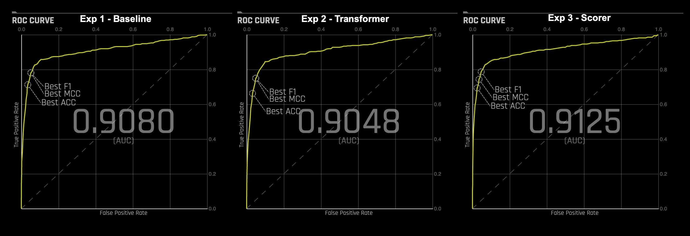
We can see that when we used the Scorer recipe, the model had better AUC with an accuracy of 0.9125 compared to Exp 1 - Baseline, which had an accuracy of 0.9080. Though in Exp 2 - Transformer, the AUC didn't improve, and therefore, there was a small decrease in the AUC. Also, when looking at the variable importance, we see a slight variation on the variables that have the largest contribution to customers churning. In Exp 1 - Baseline, the variables with most importance when it came to customers churning were "CustServ Calls," and "Day Charge." Exp 2, where we used the Transformer to sum columns with similar numerical data, we have the most important variable "CustServ Calls" and "sum of CustServ Calls."
Deeper Dive and Resources
H2O custom recipes reside in the H2O Driverless AI Recipes GitHub repo. There are multiple branches of Driverless AI recipes so make sure that you are using the same branch as the Driverless AI version you have.
1. Open the link below on a separate tab. Make sure the branch is rel-1.9.0
The rel-1.9.0 branch will be similar to the page below:

2. Recipes can be uploaded to Driverless AI by:
- Uploading custom recipes from your local machine
- Loading custom recipes from "URL" by copying and pasting the "URL", as shown in this tutorial.
- Go to the official recipes (external) repo and search for the recipe that you need and then copy the link to use in
+ Load Custom Recipe from URL

Uploading Recipes via URL
We are going to get the URL for the Brier Loss Scorer we used in Task 4 and upload it to Driverless AI.
1. Select the folder titled scorer

2. Select the folder titled classification then the folder titled binary
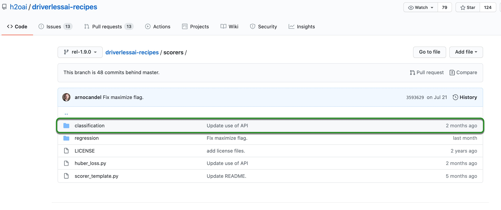
3. Click on the binary folder and then click the brier_loss.py file
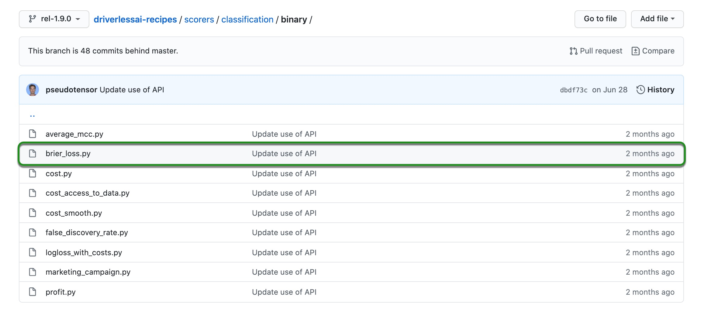
4. Copy the URL located at the top of the page

5. The URL for this version of the recipe should be the one below. This URL is then pasted into Driverless AI.
https://github.com/h2oai/driverlessai-recipes/blob/rel-1.9.0/scorers/classification/binary/brier_loss.py
6. See task 4 of this tutorial to follow the process of uploading a recipe via the raw URL
Uploading Recipes from Local Machine
For this tutorial, we are using Driverless AI 1.9.0, but we will be working off the Driverless AI 1.9.0 branch.
1. Open the link below on a separate tab. Make sure the branch is rel-1.9.0
2. Make sure it is Branch rel-1.9.0, then click on Clone or Download, then on Download ZIP. This will download the entire rel-1.9.0 repo to your desktop. If you prefer not to download the entire repo, then use the URL method.

3. Unzip the driverless-recipes-rel-1.9.0 file and save it on your local machine.
4. On Driverless AI, start an Experiment, then select Expert Settings. Now instead of selecting +Load Custom Recipe From URL, you will select +Upload Custom Recipe

5. After you click on Upload Custom Recipe, go to the directory where you saved the driverlessai-recipes-rel-1.9.0 folder
6. Select the scorer folder

7. Select the classification folder, then the binary folder
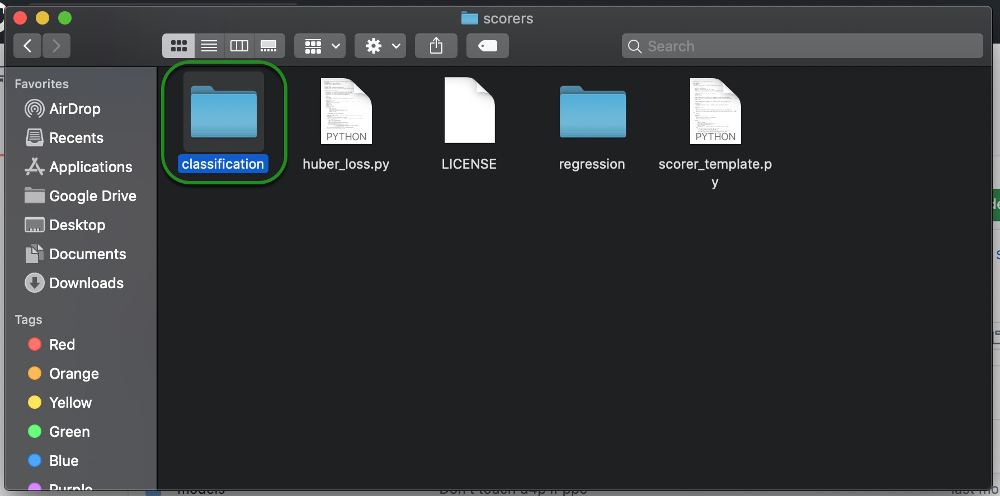
8. After, select the brier_loss.py file and then Open
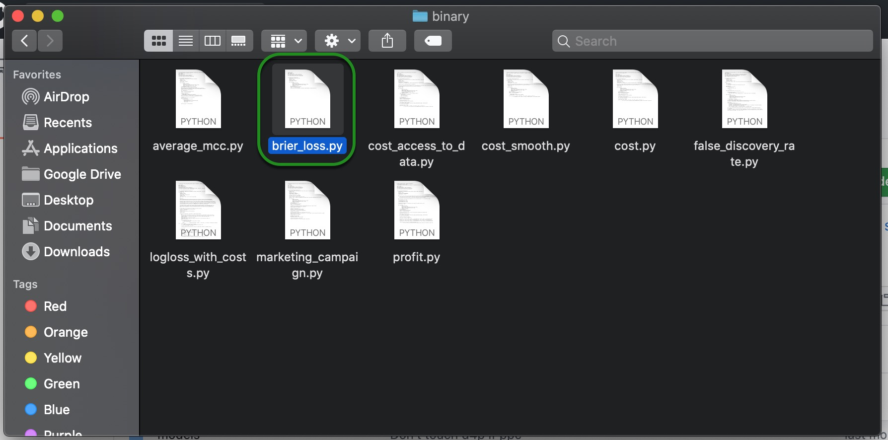
9. After doing this last step, you can continue with the rest of the steps on task 4 of this tutorial.
Check out Driverless AI's next tutorial: Build Your Own Custom Recipe Tutorial
Where you will learn to build a:
- Custom Transformer Recipe
- Custom Scorer Recipe
- Custom Model Recipe
Webinar: Extending the H2O Driverless AI Platform with Your Recipes by H2O's Arno Candel
Blog: Custom Machine Learning Recipes: The ingredients for success by H2O's Parul Pandey
Catalog: Existing Open Source Custom Recipes